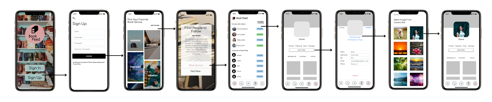
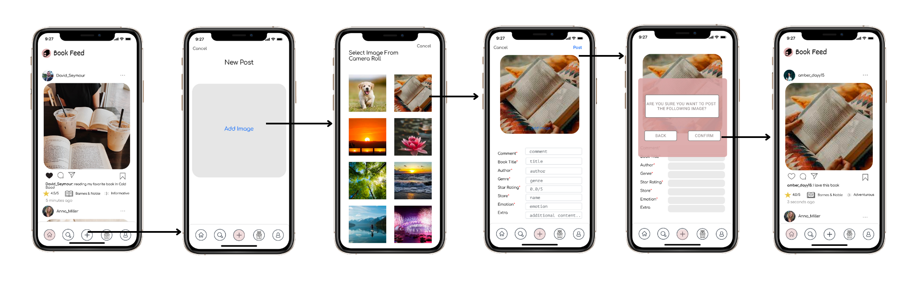
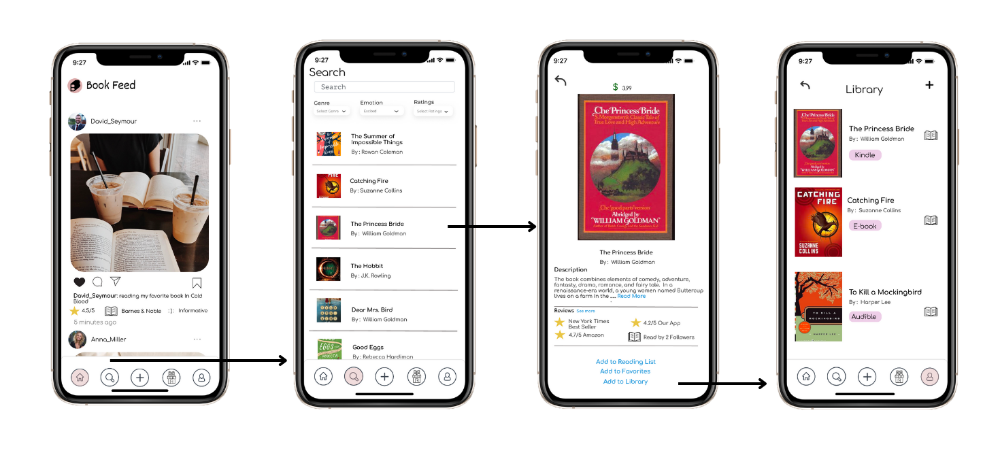
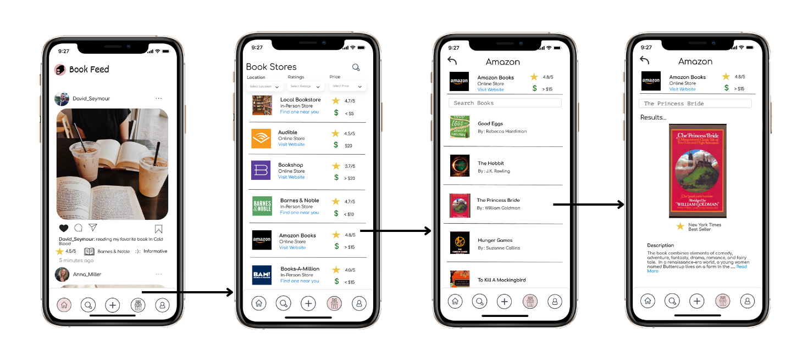

Overview
Book Feed is a platform for social book readers to interact with others online. With the variety of books in bookstores and online, readers often have difficulty determining what they want to read and where to find it. This app allows users to scroll through a social feed of books and see which ones stand out to them. In the search feature, users can filter through our recommended selection, or they can search for a book they want to read. To connect with others, users can post a book they just read for their followers to see. Creating a book community on Book Feed can help various users to enhance their reading experience.
- User Interface Design
- User Testing
- Prototyping
- User Research
Roles:
- January 2022 - April 2022
Timeline:
Background
Busy students need time away from their assignments. With social media growing rapidly each year, it has taken people away from hobbies that do not involve technology. From personal experiences and stories, we have seen people throw away great works of literature because they do not have time for it anymore. On the other side of the spectrum, people want to get away from social media and pick up a book. This app will increase the demand for books as well as create a community of same-minded individuals.
Understanding Related Works
Goodreads
Goodreads is a good competitor that has a web and app platform for finding good books to read based on interests. Users would use Goodreads when they want to find and buy a book to read with assistance from reviews and ratings.
Litsy
Litsy is an app that addresses the problem of wanting to connect with others and post the books you read. It has the main component of social media sharing with comments and recommendations on various books.
Amazon Books
Amazon is one of the biggest websites that is used internationally. Having many departments within their one website, they also have a book section that is designated to order a book online which then gets shipped to your house.
Audible
Audible's design problem is identified with users who are disabled and/or do not enjoy reading. Since audible is used for books that have speak-to-text, it is especially user-friendly to individuals who have trouble reading and are blind.
User Research
Our group conducted a total of 10 interviews with JMU students and people in our age range to ask them various questions related to our app. The interviews we conducted were done in person and over Facetime. We reached out to a wide demographic of students and asked them different types of open-ended questions. We aimed to conduct a casual, yet formal interview process so both the interview and the interviewer could feel comfortable. This will allow the students to speak freely about their experience with reading and searching for books so that we can gain accurate data. It is important that the students who will be using the app feel that it meets all their needs. We interviewed a few students over Facetime, as they were attending a university out of state.
High-Fidelity Prototype
Task 1: Sign up and create a profile
Task 2: Add a post
Task 3: Search and filter emotion by “excited” then select The Princess Bride
Task 4: Search for a bookstore filtering by online then selecting Amazon Books
Results & Takeaways
Through interviews and testing, it was observed that in editing a profile the selection on the screen states, “edit profile image” and “edit background image”. We found that users were not sure which one to click and that “edit profile image” is the only option needed. Another observation made is our bookstore filter for online only works sometimes. We found that every other test it worked but, on the others, an additional click was required to show the filtered results. Some details that were noticed by users were the inability to backspace in a type of field and the absence of the “/” key from the option of keys that will show. This only impacted the star ratings on a post where they needed to type a slash.